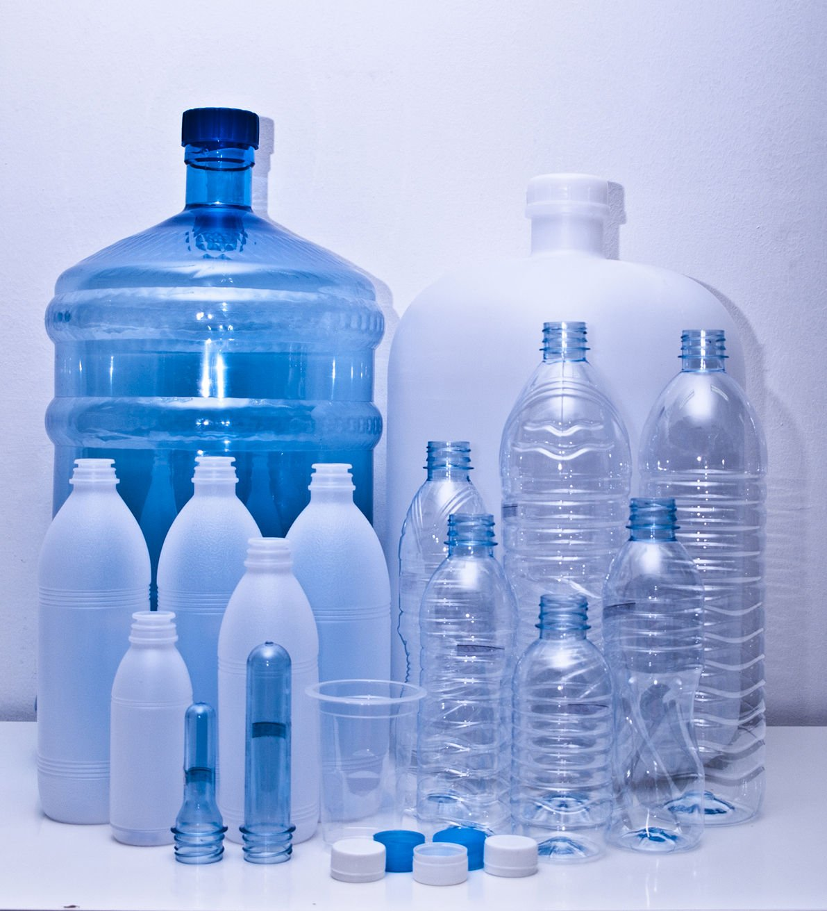
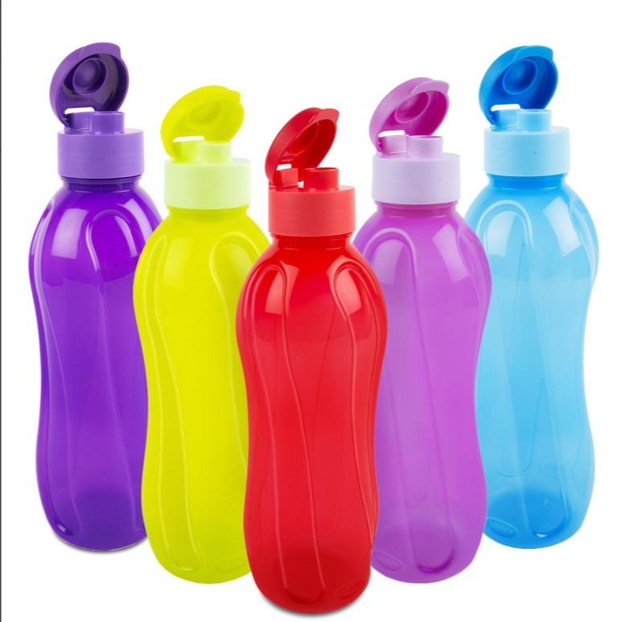
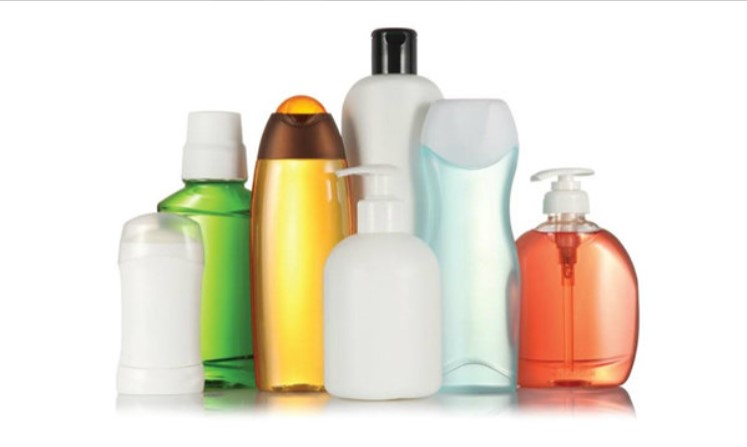
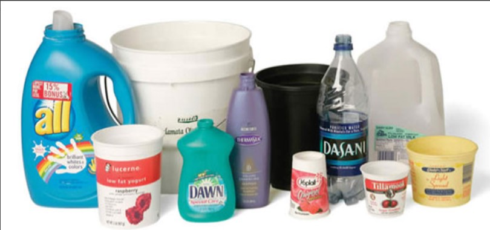
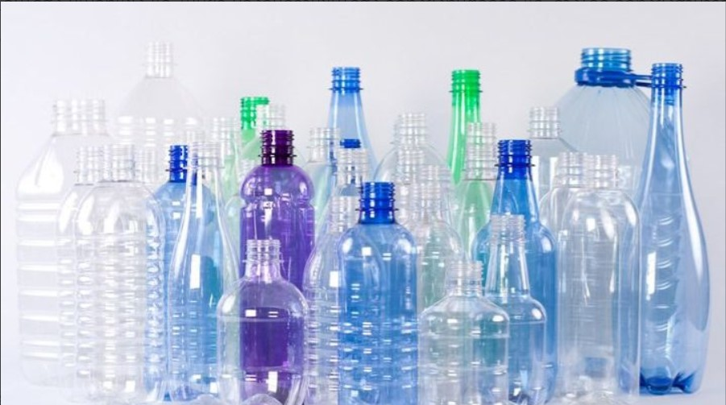
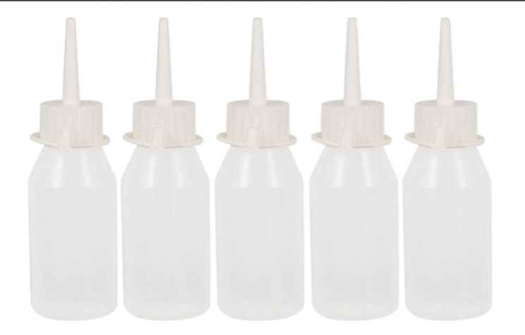
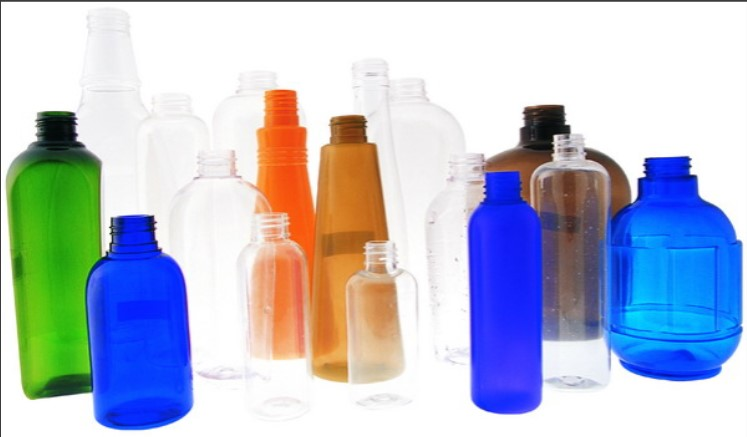

 ขวดพลาสติก เรียกได้ว่าเป็นบรรจุภัณฑ์ที่ได้รับความนิยมมาอย่างช้านานรวมถึงได้รับเลือกให้เป็น Packaging ของสินค้าหลาย ๆ ประเภท เนื่องจากข้อดีของพลาสติกหลายอย่างที่สามารถตอบโจทย์คุณลักษณะของสินค้าบางประการได้เป็นอย่างดีโดยเฉพาะสินค้าในหมวดเครื่องสำอาง ครีม สบู่เหลว และผลิตภัณฑ์ประทินความงามอื่น ๆ เนื่องจากบรรจุภภัณฑ์ประเภทนี้มีหลายรูปแบบ หากเจ้าของแบรนด์เลือกให้เหมาะกับผลิตภัณฑ์ก็ยิ่งส่งเสริมให้สินค้าของแบรนด์ดูน่าสนใจในสายตาผู้บริโภคด้วย
ประเภทของขวดพลาสติก
วิธีการนำมารีไซเคิล
ประโยชน์ของการนำขวดพลาสติกมารีไซเคิล
ประเภทของขวดพลาสติก
ประเภทที่ 1 PP (Polypropylene)
พลาสติกประเภทนี้ หลายคนอาจคุ้นชื่อนี้เป็นอย่างดี เพราะเรานำพลาสติกประเภท PP มาใช้ในการผลิต บรรจุภัณฑ์อาหารต่าง ๆ เช่น จาน ชาม ขวดพลาสติก ขวดบรรจุยา เพราะพลาสติกประเภท PP นั้น เป็นพลาสติกที่ทนทานต่อความร้อน มีความเหนียว อีกทั้งยังทนแรงกระแทก ทนต่อน้ำมัน และสารเคมีต่าง ๆ อีกด้วย

ประเภทที่ 2 PVC (Polyvinylchloride)
ก่อนหน้านี้ผู้อ่านหลาย ๆ ท่าน อาจเข้าใจผิดในเรื่องการตกค้างของสาร PVC แต่ปัจจุบันนี้ ผู้ลิตสามารถคิดค้นวิธีที่ทำให้เจ้าสารไวนิลคลอไรด์นี้นั้น ตกค้างน้อยมากกว่า 1 ต่อ ล้านส่วน พลาสติกประเภท PVC จึงได้รับความนิยมนำกลับมาใช้ใหม่ ในการผลิตขวดบรรจุน้ำมันพืช กล่องบรรจุอาหารแห้ง และสด ซึ่งจุดเด่นของ พลาสติกประเภท PVC นั้นคือ สามารถนำมาใช้แทนขวดแก้วได้ เพราะตกแล้วไม่แตก และมีน้ำหนักเบากว่าขวดแก้วมากนัก

ประเภทที่ 3 HDPE (High Density Polyethylene)
พลาสติกประเภทนี้ นำมาผลิต ขวดพลาสติกบรรจุภัณฑ์ ประเภทพวก ขวดแชมพู แกลลอนใส่น้ำยาต่าง ๆ เช่น น้ำมันเครื่อง น้ำมันเบรก เป็นต้น ทีนี้ท่านผู้อ่านหลายท่านคงร้องอ๋อกันแล้วใช่ไหม เพราะพลาสติก ประเภท HDPE นั้น สามารถทนต่อสารเคมีได้สูง มีเนื้อที่แข็ง และเหนียว ป้องกันความชื้นได้สูง อีกทั้งยังทนต่อกรด และด่างได้ดี อีกทั้งยังสามารถนำกลับมาใช้ใหม่ได้ จนกว่าเนื้อพลาสติกจะแตก

ประเภทที่ 4 PET (Polyethylene terephthalate)
จุดเด่นของพลาสติก PET คือมีความใสและเหนียวสูง สามารถป้องกันการซึมผ่านของไอน้ำที่มี ป้องกันการซึมผ่านของก๊าซได้ดีมาก และป้องกันการซึมผ่านของไขมันได้ดี นิยมนำมาผลิตเป็นขวดพลาสติก หรือขวดน้ำมันพืช

ประเภทที่ 5 LDPE (Low Density Polyethylene)
พลาสติก ประเภท LDPE นั้น เป็นพลาสติกที่มีความยืดหยุ่นได้สูง มีความเหนียว นิ่ม และใส แต่ไม่ทนความร้อน จึงนิยมน้ำมาผลิตเป็นถุงพลาสติกใช้หิ้ว พลาสติกที่ใช้แรปห่ออาหาร อีกทั้งยังสามารถนำมาผลิตเป็นหลอดได้อีกด้วย

ประเภทที่ 6 PS (Polystyrene)
ประเภทที่ 6 นี้ คือ พลาสติกที่มีชื่อว่า PS เป็นพลาสติกมีลักษณะโปร่งใส มีเนื้อที่เปราะและแตกง่าย จึงนิยมน้ำมาผลิตเป็น กล่องโฟม ถ้วย และชาม เพราะมีความทนต่อกรดและด่าง และยังทนกับอุณหภูมิได้ตั้งแต่ -10c° - 80c° อีกทั้งเนื้อพลาสติกประเภทนี้ยังสามารถพิมพ์สีสันและลวดลายสวยงามได้

Back to top
วิธีการนำมารีไซเคิล
1. การคัดแยกและล้างทำความสะอาด : ขั้นตอนแรกคือการแยกขวดต่างๆ ที่ได้มา โดยจะต้องคัดแยกประเภทของพลาสติกและชิ้นงานพลาสติก เช่น พลาสติกชนิดPP พลาสติกชนิดPE และพลาสติกชนิดไฮเดน เมื่อแยกประเภทของพลาสติกเสร็จแล้ว ต้องแยกคุณลักษณะของพลาสติกด้วย เช่น พลาสติกใช้สำหรับงานฉีด พลาสติกสำหรับงานเป่า, ท่อพีวีซี, โต๊ะเก้าอี้ทำงาน, ถุงพลาสติก, ถุงขยะหรือ ขวดพลาสติก เมื่อคัดแยกเรียบร้อยแล้วจึงนำมาทำความสะอาด ซึ่งถือเป็นขั้นตอนสำคัญเพราะหากล้างไม่สะอาด พลาสติกที่ได้อาจมีกลิ่นเหม็นและอาจทำให้พลาสติกที่ได้ไม่มีคุณภาพ นั่นเอง
2. การบดและหลอมพลาสติก : ขั้นตอนนี้จะนำพลาสติกที่คัดแยกและทำความสะอาดแล้วนำมาเข้าเครื่องบดพลาสติก เพื่อบดหรือหลอมขวดที่ได้ให้ออกมาเป็นพลาสติกชิ้นเล็กๆ ตามขนาดที่โรงงานรีไซเคิลต้องการ เรียกว่าสแครปหรือบ้างครั้งอาจจะบดจนเป็นผงพลาสติกที่สามารถนำไปหลอมให้เป็นเม็ดพลาสติกเพื่อนำไปใช้ต่อได้เลย
3. การนำเม็ดพลาสติกไปผสมสี : เมื่อได้เม็ดพลาสติกแล้ว ก็จะนำมาเข้าสู่ขั้นตอนต่อไปก็คือการนำมาผสมสีเขากับเม็ดพลาสติก เพื่อจะได้มีสีเฉดเดียวกันโดยแม่สีนี้มีทั้งแบบชนิดเม็ด และแม่สีชนิดผง
4. การนำไปชึ้นรูปเป็นขวดพลาสติก : และนำมาขึ้นรูปเป็นขวดรูปทรงต่างๆ ไม่ว่าจะเป็นขวดนำ้, ขวด PET, หรือขวดบรรจุภัณฑ์ต่างๆ ที่พร้อมใช้งานและถูกส่งกลับมาเพื่อใช้เป็นบรรจุผลิตภัณฑ์ที่วางจำหน่ายโดยทั่วไป
Back to top
ประโยชน์ของการนำขวดพลาสติกมารีไซเคิล
• ช่วยลดปริมาณขยะให้กับโลกได้
• ช่วยลดการผลิตขวดพลาสติกใหม่กว่า 200,000 กิโลกรัม
• ช่วยลดการใช้พลังงานและวัตถุดิบในการผลิตพลาสติกใหม่
• ช่วยลดการปล่อยก๊าซคาร์บอนไดออกไซด์ (CO2) ได้มหาศาล
• ช่วยลดปริมาณมลพิษในอากาศจากการเผาขยะ ลดมลพิษในดินจากสารเคมีที่ซึมในหลุมฝังกลบ รวมถึงลดโอกาสที่ไมโครพลาสติกปนเปื้อนไปในแหล่งน้ำ
• ลดการใช้พลังงานและวัตถุดิบในการผลิตพลาสติกใหม่
• การรีไซเคิล ขวดพลาสติก 1 ตัน ช่วยประหยัดพื้นที่ในการฝังกลบลบขยะได้มากถึง 5.7 ลูกบาศก์เมตร
Back to top
แหล่งที่มา : https://www.mr-copplastic.com/%E0%B8%82%E0%B8%A7%E0%B8%94%E0%B8%9E%E0%B8%A5%E0%B8%B2%E0%B8%AA%E0%B8%95%E0%B8%B4%E0%B8%81+10140.html
แหล่งที่มา : https://www.plasticparkstore.com/plastic-packaging-for-product/
แหล่งที่มา : https://www.oth.co.th/%E0%B8%81%E0%B8%A3%E0%B8%B0%E0%B8%9A%E0%B8%A7%E0%B8%99%E0%B8%81%E0%B8%B2%E0%B8%A3%E0%B8%A3%E0%B8%B5%E0%B9%84%E0%B8%8B%E0%B9%80%E0%B8%84%E0%B8%B4%E0%B8%A5%E0%B8%82%E0%B8%A7%E0%B8%94%E0%B8%9E%E0%B8%A5%E0%B8%B2%E0%B8%AA%E0%B8%95%E0%B8%B4%E0%B8%81%E0%B8%A1%E0%B8%B5%E0%B8%AD%E0%B8%B0%E0%B9%84%E0%B8%A3%E0%B8%9A%E0%B9%89%E0%B8%B2%E0%B8%87